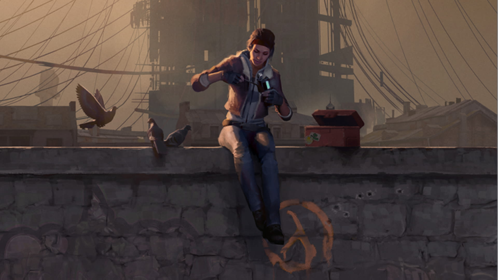
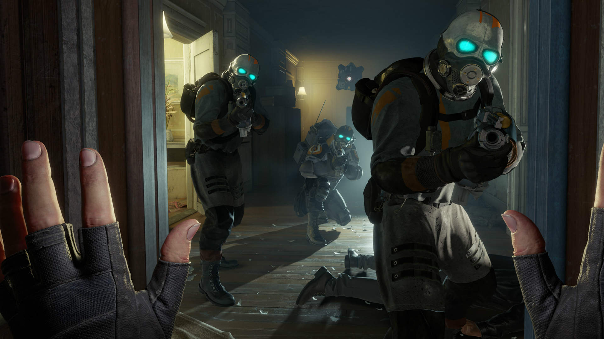
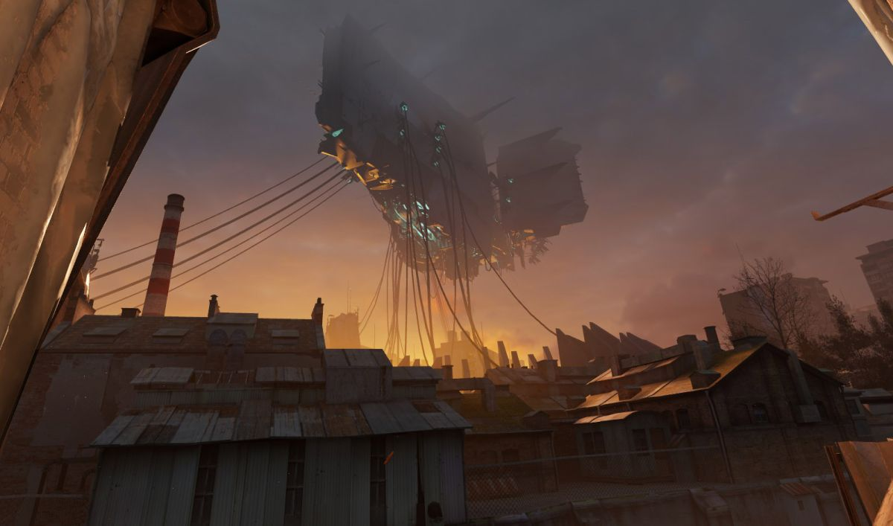
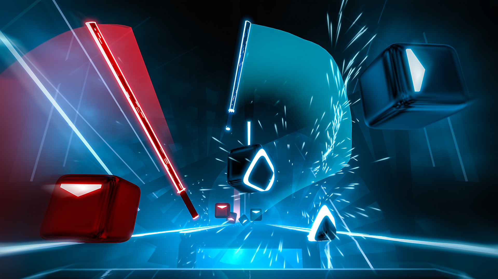

Half Life: Alyx
Introduction
Half-Life: Alyx is a 2020 virtual reality (VR) first-person shooter developed and published by Valve.
The VR elements allow the player to interact with the environment and fight enemies.
The players will also be able to use "gravity gloves" to manipulate objects (these work like the gravity gun from Half-Life 2).
Other traditional Half-Life elements return, such as physics puzzles, combat, exploration, and survival horror elements.
The game is named after its protagonist, Alyx Vance.
|  |
| Alyx Vance with some pigeons. |
Alyx was released for Windows on March 23, 2020, and supported for most PC-compatible VR headsets. It was praised for its graphics, voice acting, narrative, and atmosphere, and has often been described as VR's first killer app.
Story
The events of Half-Life: Alyx occur five years before those of Half-Life 2.
The game has the player controlling Alyx, a member of a resistance against the Combine, a viscious alien race of imperialists. After she rescues her father, she is told that the Combine are storing a super-weapon in a "Vault" and that she has to go steal its contents.
|  |  |
| Interdimensional bad guys know as the Combine. | The Vault. |
Alyx will have to venture through the Quarantine Zone, contending with various species of Xen aliens and Combine soldiers on her way to the Vault, before penetrating it and discovering it's contents.
Gameplay
Players use VR to get supplies, use interfaces, throw objects, and engage in combat. The player is also equipped with gravity gloves, that allow players to manipulate gravity. A similar weapon was also present in Half-Life 2.
 |
 |
| The wonders of VR. | Grabbity Gloves in action. |
Other traditional Half-Life elements like exploration, puzzles, combat, and a central story arc are also present within the game. Valve intentionally made it so that every weapon can be used with one hand, as they wanted players to always have a spare hand so that the player could interact with the surrounding world as much as possible. The game is primarily a first-person shooter, but it does also add elements of the survival horror genre, as health and ammo are scarce. The game also includes a few jump scares.
 |
 |
| He'll be sitting this one out. | Moving around the map. |
As with any first-person shooter, the player has the ability to move Alyx across a level. Because the game is VR, it can be done with VR room-scale support if the player has sufficient space, and actually move to move Alyx around in-game. Or if one doesn't have the necessary space, the player can choose to use analog sticks on the VR controllers to move Alyx (a method common to most VR games), and use a "teleportation" method where the player points in-game to where they want to move in the room and the game jumps Alyx there. An intermediate mode also exists where, after selecting the destination point, the game glides Alyx there.
This allows for a smoother transition and allows the player to look around during it. It's worth noting that even in the case of the teleportation option, the game still simulates the movement even though the action appears instantaneous, and Alyx may die if attacked or moved from too great a height.
Development
After several failed attempts to create a new instalment in the Half-Life franchise, Valve began experimenting with VR in the mid-2010s, as they realized the demand for a large-scale VR game. Before deciding that Half-Life was best suited for VR, Valve experimented with prototypes using various other intellectual properties in their catalog, such as Portal. Alyx entered full production in 2016, with the largest team in Valve's history. The game was built using Valve's new Source 2 engine.
Compatible Headsets
Half-Life: Alyx supports all SteamVR-compatible VR headsets, such as:
- The Valve Index
- HTC Vive
- Oculus Rift
- Oculus Quest
- All Windows Mixed Reality headsets
As the gameplay was designed around VR, Valve has stated that there were no plans for a non-VR version.
Impact
As mentioned before, Half Life: ALyx is considered by many to be VR's first killer app. A killer app is a
"computer program or software that is so necessary or desirable that it proves the core value of some larger technology, such as computer hardware, a video game console, [...]".
Basically, many consider Half LIfe: Alyx to be so good it's worth investing in all the necessary tech.
Before Alyx, VR hadn't done much to prove it's worth.
Games like Job Simulator (2016) or Beat Saber (2018), while fun, are quite limited in their use
of VR and tend to be rather short.
 |
 |
| Job Simulator, in case you hadn't experienced work in real life. | Beat Saber, the game that allows you to play music with lightsabers. |
Valve managed to bring the quality of a AAA game to VR and even before the game was released, it's announcement helped boost the sales of VR headsets, including the Valve Index.
Hopefully, the success of Half-Life: Alyx will show other software houses the potential of the technology and lead to the development of even more high-quality VR games.